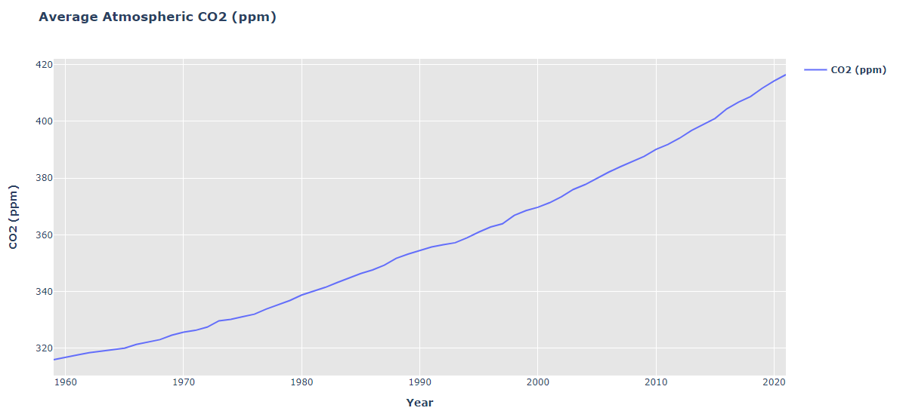
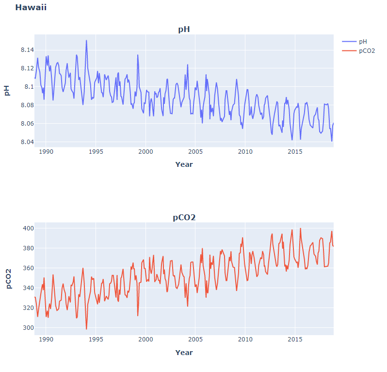
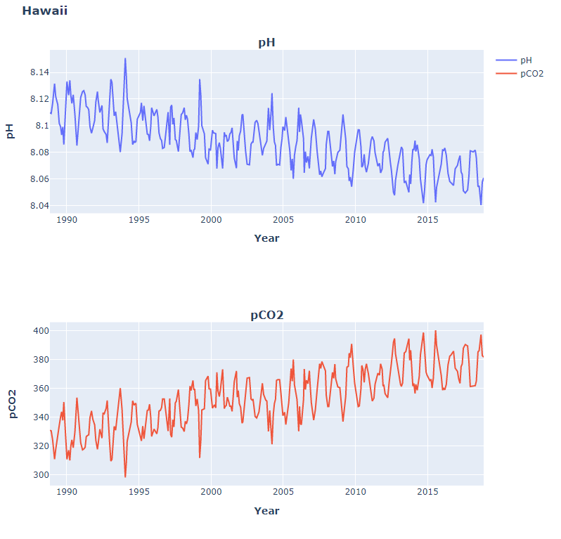

Glaciers Mass Reduction
Melting ice sheets on Greenland and Antarctica add fresh water to the ocean, increasing sea level and possibly changing ocean circulation that is driven by differences in temperature and salinity. Because of their light color, snow and ice also reflect more sunlight than open water or bare ground, so a reduction in snow cover and ice causes the Earth’s surface to absorb more energy from the sun and become warmer.
Sea Level
The purpose of this project is to present the impact of increased carbon dioxide in the Earth's atmosphere, oceans and land. With the assembled dataset, we plotted various aspects of the carbon cycle. Correlating factors observed are increases in temperature, carbon dioxide and acidity.
CO2 Levels/Ph

 
